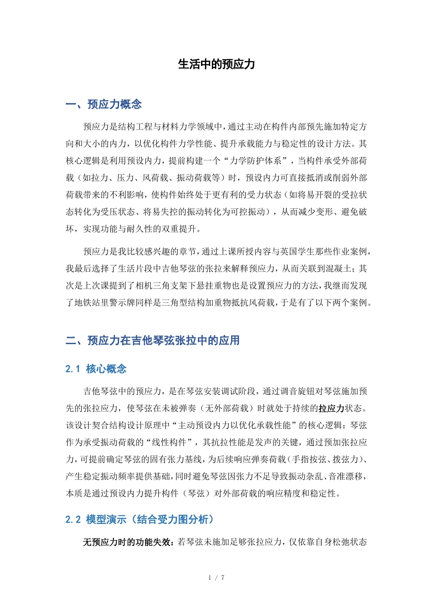
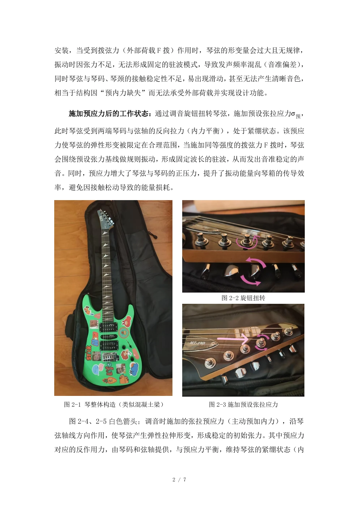
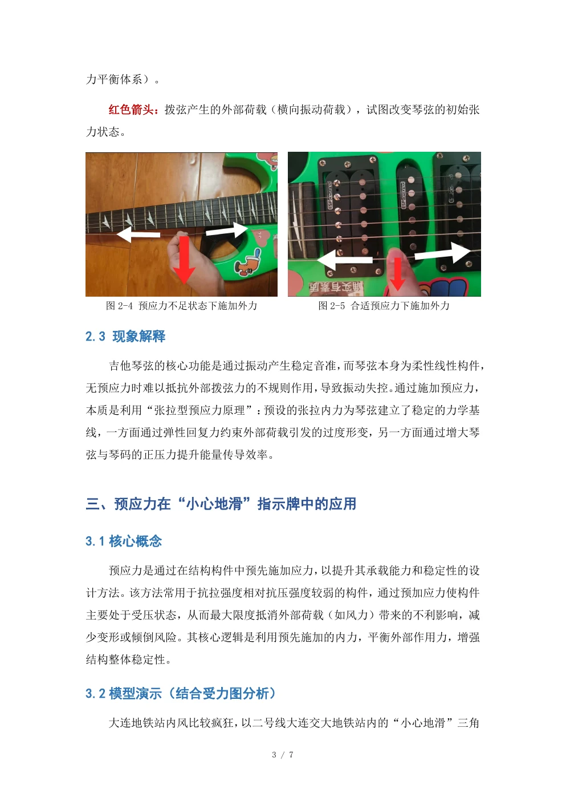
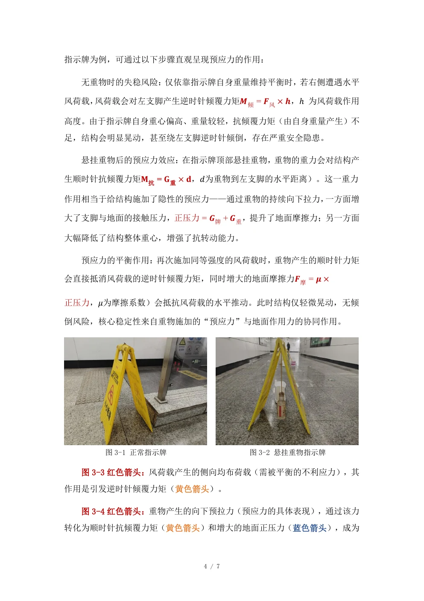
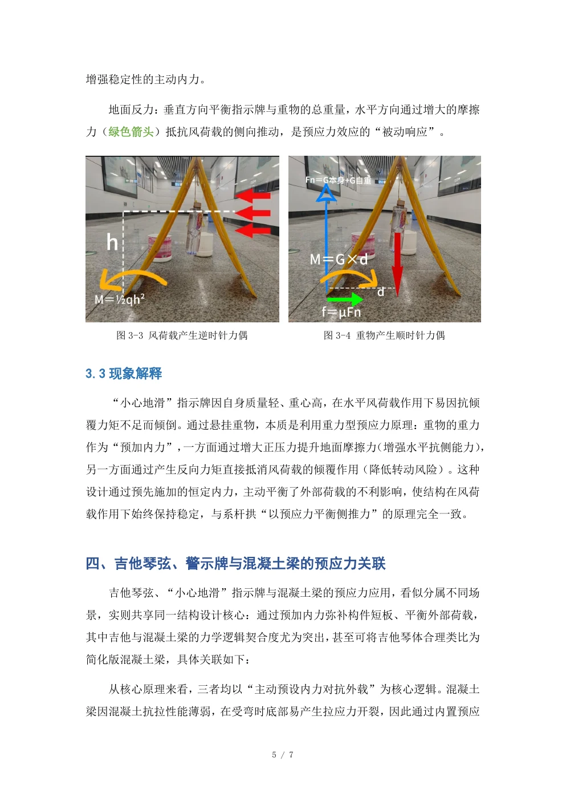
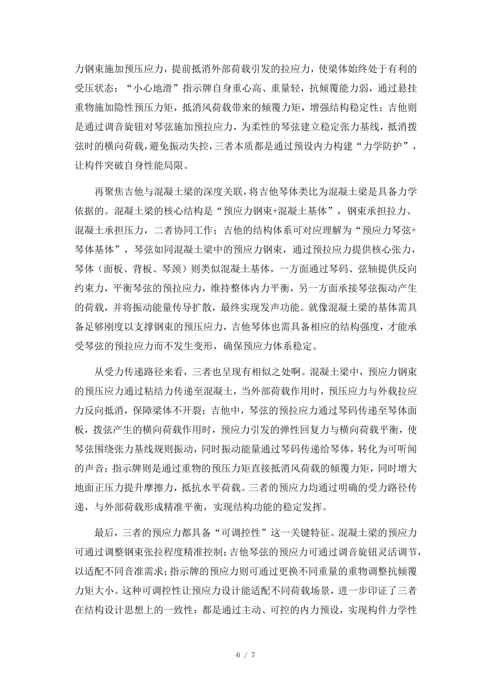
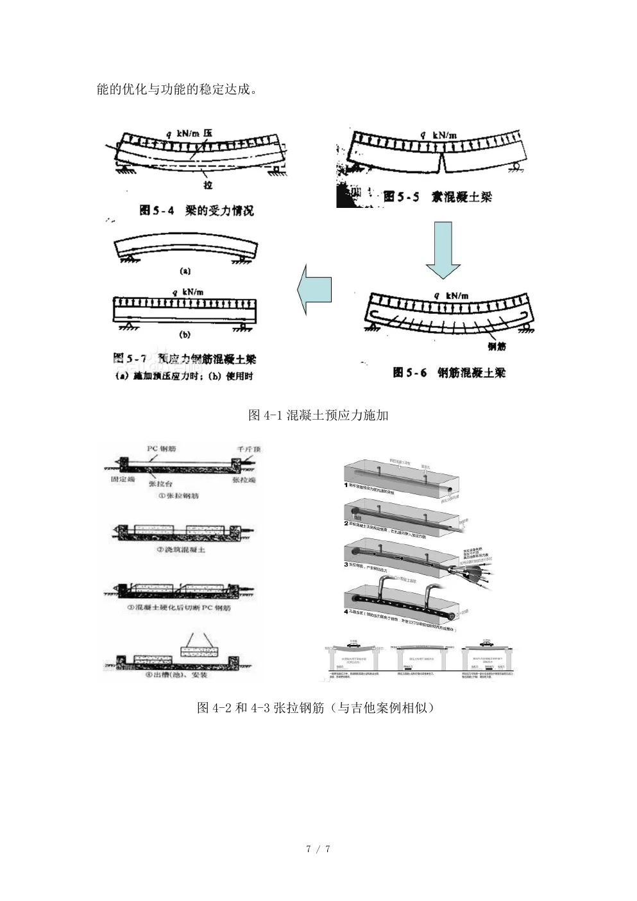

大连交通大学 · 智能建造23
我的原作生活中的预应力
庄佳霖







查看可复制的原文文字
1 / 7
生活中的预应力
一、预应力概念
预应力是结构工程与材料力学领域中，通过主动在构件内部预先施加特定方
向和大小的内力，以优化构件力学性能、提升承载能力与稳定性的设计方法。其
核心逻辑是利用预设内力，提前构建一个“力学防护体系”，当构件承受外部荷
载（如拉力、压力、风荷载、振动荷载等）时，预设内力可直接抵消或削弱外部
荷载带来的不利影响，使构件始终处于更有利的受力状态（如将易开裂的受拉状
态转化为受压状态、将易失控的振动转化为可控振动），从而减少变形、避免破
坏，实现功能与耐久性的双重提升。
预应力是我比较感兴趣的章节，通过上课所授内容与英国学生那些作业案例，
我最后选择了生活片段中吉他琴弦的张拉来解释预应力，从而关联到混凝土；其
次是上次课提到了相机三角支架下悬挂重物也是设置预应力的方法，我继而发现
了地铁站里警示牌同样是三角型结构加重物抵抗风荷载，于是有了以下两个案例。
二、预应力在吉他琴弦张拉中的应用
2.1 核心概念
吉他琴弦中的预应力，是在琴弦安装调试阶段，通过调音旋钮对琴弦施加预
先的张拉应力，使琴弦在未被弹奏（无外部荷载）时就处于持续的拉应力状态。
该设计契合结构设计原理中“主动预设内力以优化承载性能”的核心逻辑：琴弦
作为承受振动荷载的“线性构件”，其抗拉性能是发声的关键，通过预加张拉应
力，可提前确定琴弦的固有张力基线，为后续响应弹奏荷载（手指按弦、拨弦力）、
产生稳定振动频率提供基础，同时避免琴弦因张力不足导致振动杂乱、音准漂移，
本质是通过预设内力提升构件（琴弦）对外部荷载的响应精度和稳定性。
2.2 模型演示（结合受力图分析）
无预应力时的功能失效：若琴弦未施加足够张拉应力，仅依靠自身松弛状态
2 / 7
安装，当受到拨弦力（外部荷载 F 拨）作用时，琴弦的形变量会过大且无规律，
振动时因张力不足，无法形成固定的驻波模式，导致发声频率混乱（音准偏差），
同时琴弦与琴码、琴颈的接触稳定性不足，易出现滑动，甚至无法产生清晰音色，
相当于结构因“预内力缺失”而无法承受外部荷载并实现设计功能。
施加预应力后的工作状态：通过调音旋钮扭转琴弦，施加预设张拉应力σ预，
此时琴弦受到两端琴码与弦轴的反向拉力（内力平衡），处于紧绷状态。该预应
力使琴弦的弹性形变被限定在合理范围，当施加同等强度的拨弦力 F 拨时，琴弦
会围绕预设张力基线做规则振动，形成固定波长的驻波，从而发出音准稳定的声
音。同时，预应力增大了琴弦与琴码的正压力，提升了振动能量向琴箱的传导效
率，避免因接触松动导致的能量损耗。
图 2-2 旋钮扭转
图 2-1 琴整体构造（类似混凝土梁） 图 2-3 施加预设张拉应力
图 2-4、2-5 白色箭头：调音时施加的张拉预应力（主动预加内力），沿琴
弦轴线方向作用，使琴弦产生弹性拉伸形变，形成稳定的初始张力。其中预应力
对应的反作用力，由琴码和弦轴提供，与预应力平衡，维持琴弦的紧绷状态（内
3 / 7
力平衡体系）。
红色箭头：拨弦产生的外部荷载（横向振动荷载），试图改变琴弦的初始张
力状态。
图 2-4 预应力不足状态下施加外力 图 2-5 合适预应力下施加外力
2.3 现象解释
吉他琴弦的核心功能是通过振动产生稳定音准，而琴弦本身为柔性线性构件，
无预应力时难以抵抗外部拨弦力的不规则作用，导致振动失控。通过施加预应力，
本质是利用“张拉型预应力原理”：预设的张拉内力为琴弦建立了稳定的力学基
线，一方面通过弹性回复力约束外部荷载引发的过度形变，另一方面通过增大琴
弦与琴码的正压力提升能量传导效率。
三、预应力在“小心地滑”指示牌中的应用
3.1 核心概念
预应力是通过在结构构件中预先施加应力，以提升其承载能力和稳定性的设
计方法。该方法常用于抗拉强度相对抗压强度较弱的构件，通过预加应力使构件
主要处于受压状态，从而最大限度抵消外部荷载（如风力）带来的不利影响，减
少变形或倾倒风险。其核心逻辑是利用预先施加的内力，平衡外部作用力，增强
结构整体稳定性。
3.2 模型演示（结合受力图分析）
大连地铁站内风比较疯狂，以二号线大连交大地铁站内的“小心地滑”三角
4 / 7
指示牌为例，可通过以下步骤直观呈现预应力的作用：
无重物时的失稳风险：仅依靠指示牌自身重量维持平衡时，若右侧遭遇水平
风荷载，风荷载会对左支脚产生逆时针倾覆力矩? 倾 = ?风 × ?，ℎ 为风荷载作用
高度。由于指示牌自身重心偏高、重量较轻，抗倾覆力矩（由自身重量产生）不
足，结构会明显晃动，甚至绕左支脚逆时针倾倒，存在严重安全隐患。
悬挂重物后的预应力效应：在指示牌顶部悬挂重物，重物的重力会对结构产
生顺时针抗倾覆力矩? 抗 = ?重 × ?，?为重物到左支脚的水平距离）。这一重力
作用相当于给结构施加了隐性的预应力——通过重物的持续向下拉力，一方面增
大了支脚与地面的接触压力，正压力 = ?牌 + ?重，提升了地面摩擦力；另一方面
大幅降低了结构整体重心，增强了抗转动能力。
预应力的平衡作用：再次施加同等强度的风荷载时，重物产生的顺时针力矩
会直接抵消风荷载的逆时针倾覆力矩，同时增大的地面摩擦力?摩 = ? ×
正压力，?为摩擦系数）会抵抗风荷载的水平推动。此时结构仅轻微晃动，无倾
倒风险，核心稳定性来自重物施加的“预应力”与地面作用力的协同作用。
图 3-1 正常指示牌 图 3-2 悬挂重物指示牌
图 3-3 红色箭头：风荷载产生的侧向均布荷载（需被平衡的不利应力），其
作用是引发逆时针倾覆力矩（黄色箭头）。
图 3-4 红色箭头：重物产生的向下预拉力（预应力的具体表现），通过该力
转化为顺时针抗倾覆力矩（黄色箭头）和增大的地面正压力（蓝色箭头），成为
5 / 7
增强稳定性的主动内力。
地面反力：垂直方向平衡指示牌与重物的总重量，水平方向通过增大的摩擦
力（绿色箭头）抵抗风荷载的侧向推动，是预应力效应的“被动响应”。
图 3-3 风荷载产生逆时针力偶 图 3-4 重物产生顺时针力偶
3.3 现象解释
“小心地滑”指示牌因自身质量轻、重心高，在水平风荷载作用下易因抗倾
覆力矩不足而倾倒。通过悬挂重物，本质是利用重力型预应力原理：重物的重力
作为“预加内力”，一方面通过增大正压力提升地面摩擦力（增强水平抗侧能力），
另一方面通过产生反向力矩直接抵消风荷载的倾覆作用（降低转动风险）。这种
设计通过预先施加的恒定内力，主动平衡了外部荷载的不利影响，使结构在风荷
载作用下始终保持稳定，与系杆拱“以预应力平衡侧推力”的原理完全一致。
四、吉他琴弦、警示牌与混凝土梁的预应力关联
吉他琴弦、“小心地滑”指示牌与混凝土梁的预应力应用，看似分属不同场
景，实则共享同一结构设计核心：通过预加内力弥补构件短板、平衡外部荷载，
其中吉他与混凝土梁的力学逻辑契合度尤为突出，甚至可将吉他琴体合理类比为
简化版混凝土梁，具体关联如下：
从核心原理来看，三者均以“主动预设内力对抗外载”为核心逻辑。混凝土
梁因混凝土抗拉性能薄弱，在受弯时底部易产生拉应力开裂，因此通过内置预应
6 / 7
力钢束施加预压应力，提前抵消外部荷载引发的拉应力，使梁体始终处于有利的
受压状态；“小心地滑”指示牌自身重心高、重量轻，抗倾覆能力弱，通过悬挂
重物施加隐性预压力矩，抵消风荷载带来的倾覆力矩，增强结构稳定性；吉他则
是通过调音旋钮对琴弦施加预拉应力，为柔性的琴弦建立稳定张力基线，抵消拨
弦时的横向荷载，避免振动失控，三者本质都是通过预设内力构建“力学防护”，
让构件突破自身性能局限。
再聚焦吉他与混凝土梁的深度关联，将吉他琴体类比为混凝土梁是具备力学
依据的。混凝土梁的核心结构是“预应力钢束+混凝土基体”，钢束承担拉力、
混凝土承担压力，二者协同工作；吉他的结构体系可对应理解为“预应力琴弦+
琴体基体”，琴弦如同混凝土梁中的预应力钢束，通过预拉应力提供核心张力，
琴体（面板、背板、琴颈）则类似混凝土基体，一方面通过琴码、弦轴提供反向
约束力，平衡琴弦的预拉应力，维持整体内力平衡，另一方面承接琴弦振动产生
的荷载，并将振动能量传导扩散，最终实现发声功能。就像混凝土梁的基体需具
备足够刚度以支撑钢束的预压应力，吉他琴体也需具备相应的结构强度，才能承
受琴弦的预拉应力而不发生变形，确保预应力体系稳定。
从受力传递路径来看，三者也呈现有相似之处啊。混凝土梁中，预应力钢束
的预压应力通过粘结力传递至混凝土，当外部荷载作用时，预压应力与外载拉应
力反向抵消，保障梁体不开裂；吉他中，琴弦的预拉应力通过琴码传递至琴体面
板，拨弦产生的横向荷载作用时，预应力引发的弹性回复力与横向荷载平衡，使
琴弦围绕张力基线规则振动，同时振动能量通过琴码传递给琴体，转化为可听闻
的声音；指示牌则是通过重物的预压力矩直接抵消风荷载的倾覆力矩，同时增大
地面正压力提升摩擦力，抵抗水平荷载。三者的预应力均通过明确的受力路径传
递，与外部荷载形成精准平衡，实现结构功能的稳定发挥。
最后，三者的预应力都具备“可调控性”这一关键特征。混凝土梁的预应力
可通过调整钢束张拉程度精准控制；吉他琴弦的预应力可通过调音旋钮灵活调节，
以适配不同音准需求；指示牌的预应力则可通过更换不同重量的重物调整抗倾覆
力矩大小。这种可调控性让预应力设计能适配不同荷载场景，进一步印证了三者
在结构设计思想上的一致性：都是通过主动、可控的内力预设，实现构件力学性
7 / 7
能的优化与功能的稳定达成。
图 4-1 混凝土预应力施加
图 4-2 和 4-3 张拉钢筋（与吉他案例相似）
这是一份便于网页阅读的原作视图，保留提交内容的文字、图片和基本顺序；公开页面不显示学号。